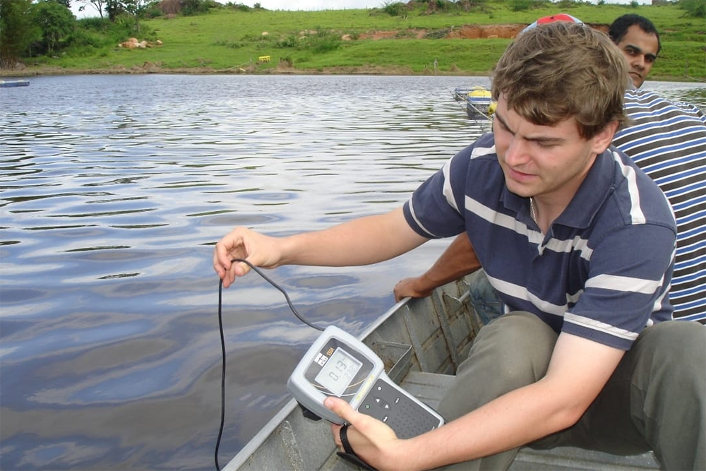

MONITOREO DE OXÍGENO DISUELTO
INTRODUCCIÓN
El monitoreo del oxígeno disuelto es uno de los factores más críticos en la producción piscícola moderna. Mantener niveles adecuados de oxígeno garantiza el bienestar de los peces, mejora la tasa de crecimiento y reduce riesgos de mortalidad por hipoxia.
Este sistema permite supervisar en tiempo real las condiciones del agua en los estanques, facilitando la toma de decisiones oportunas para optimizar la alimentación, la aireación y la gestión ambiental del cultivo.
IMPORTANCIA DEL MONITOREO
PREVIENE LA HIPOXIA EN LOS PECES:
El seguimiento continuo del oxígeno disuelto permite detectar niveles críticos antes de que afecten la salud de los peces, evitando estrés y mortalidad.
MEJORA EL CRECIEMIENTO Y RENDIMIENTO:
Mantener concentraciones adecuadas de oxígeno favorece el metabolismo, la alimentación eficiente y un desarrollo óptimo en los sistemas de cultivo.
REDUCE PERDIDAS ECONOMICAS:
Un control adecuado disminuye riesgos de mortalidad masiva y mejora la productividad, contribuyendo a una gestión más rentable del sistema acuícola.
